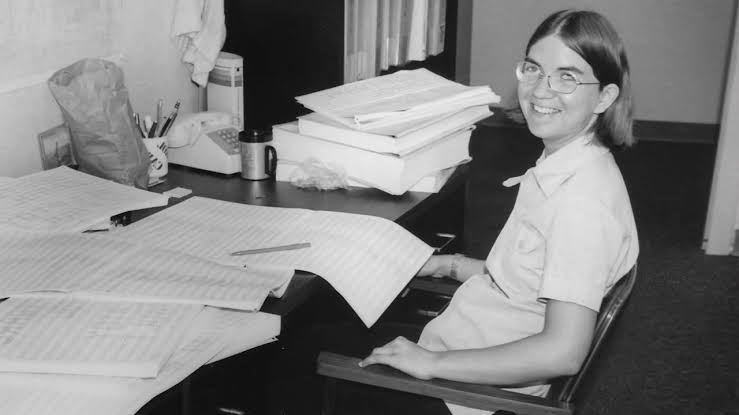
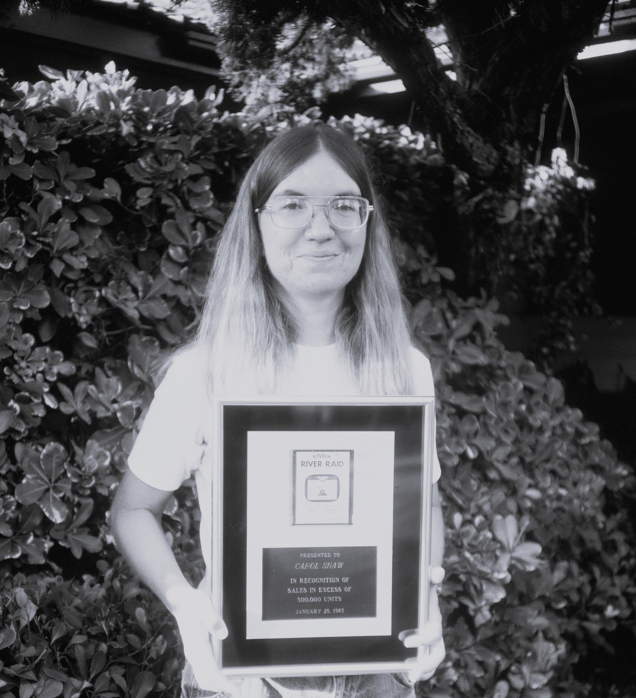

"Carol Shaw é uma engenheira computacional estadunidense, notória por ser a primeira mulher desenvolvedora de jogos eletrônicos no mundo."
A Carol Shaw foi a primeira mulher a desbravar o universo dos games, na década de 70.
Quando trabalhava na Atari,
ela lançou comercialmente o primeiro jogo criado por uma mulher, o 3-D Tic-Tac-Toe,
que tinha como base o tradicional jogo da velha.
Depois, na Activision, ela programou seu jogo de maior repercussão: o River Raid,
um clássico que ficou entre os mais populares de sua época.
Diferente dos vários games de tiro existentes até aquele momento, em que o jogo acontecia em uma tela fixa,
no River Raid o avião se movia verticalmente ao longo de um rio e combatia inimigos,
como outros aviões, navios e helicópteros.
A história de Shaw é até hoje uma inspiração para a participação de mulheres na indústria dos videogames.
História de Carol Shaw

"Na escola, Shaw se dedicava bastante aos estudos matemáticos e foi no ensino médio que ela começou a interagir com computadores,
quando descobriu que podia jogar games baseados em texto no sistema BASIC."
A primeira mulher a desenvolver um jogo foi Carol Shaw. Nascida em 1955, em Palo Alto, na Califórnia,
Shaw venceu as barreiras da época para ir atrás do que realmente queria,
fazendo história ao criar mais tarde, o jogo River Raid, um dos maiores clássicos do Atari 2600.
Shaw nasceu e cresceu na região do Vale do Silício, lugar que abriga muitas empresas globais de tecnologia,
o que sempre a influenciou muito a seguir nessa área.
Além disso, seu pai era um engenheiro mecânico que trabalhava no Stanford Linear Accelerator Center (um laboratório de projetos energéticos para o governo).
Desde a infância, Shaw demonstrou ter uma grande afinidade com matemática, além de um enorme interesse por sets de construção e ferroramas.
Ela mesma diz que não gostava de brincar de bonecas e preferia mexer no modelo da ferrovia de seus irmãos.
Carreira

"Foi quando ela entrou na Activision, em 1982, que sua carreira decolou."
Sua entrada na Activision
A Activision era um estúdio formado basicamente por antigos desenvolvedores de jogos da Atari insatisfeitos
por sua falta de créditos e reconhecimento em suas próprias obras. A empresa fabricava cartuchos para o Atari 2600.
Lá, Shaw estava com ideias de fazer algo diferente do que seus projetos anteriores e por isso, resolveu desenvolver um jogo de ação.
Assim nasceu River Raid, em que o jogador (ou até 2 jogadores, em turnos alternados)
controla um avião que sobrevoa um rio, repleto de navios, helicópteros e aviões inimigos.
River Raid foi um marco de inovação para a época, pois tem diferentes velocidades para controle do avião
é possível diminuir e acelerar a velocidade e o jogador pode colidir
com vários objetos diferentes e abastecer. Eram muitos elementos e recursos comparados aos outros jogos do mesmo período.
Além disso, graças às habilidades de programação de Carol Shaw,
um dos grandes diferenciais do game é que seus mapas eram muito mais coesos do que outros títulos.
O jogo fez muito sucesso e superou um milhão de unidades vendidas. Em virtude disso, a desenvolvedora
recebeu um cartucho de platina do jogo Carol tem ele até hoje.
Carol trabalhou ainda em uma versão do jogo para o Atari 5200, e outra, para o computador Atari 800.
Depois disso, ela chegou a lançar o jogo Happy Trails para a plataforma Intellivision.